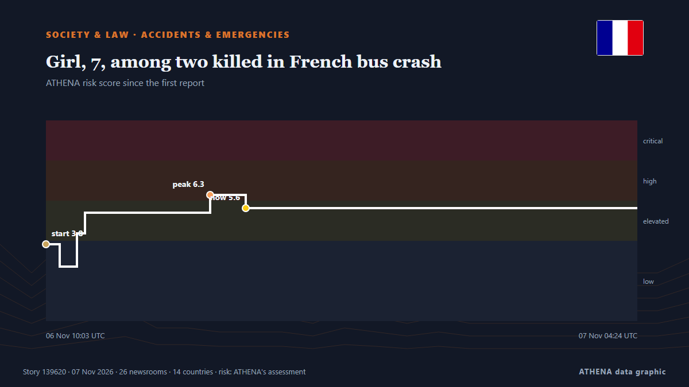

Society, Law & Public Policy
SponsoredPresented by  Cybernetics and Artificial Intelligence Lab Welcome to the Cybernetics and Artificial Intelligence Laboratory, established at the Department of Business Administration of the National and Kapodistrian University of Athens. The lab is headed by Professor Dimitrios Thomakos. The lab aims to do research that can be published in top venues. Our research uses tools and methods of Artificial Intelligence, and lies in the following areas: - Forecasting - Decision making - Cyber security - Finance We are always looking forward to collaborating with exceptional students!
Cybernetics and Artificial Intelligence Lab Welcome to the Cybernetics and Artificial Intelligence Laboratory, established at the Department of Business Administration of the National and Kapodistrian University of Athens. The lab is headed by Professor Dimitrios Thomakos. The lab aims to do research that can be published in top venues. Our research uses tools and methods of Artificial Intelligence, and lies in the following areas: - Forecasting - Decision making - Cyber security - Finance We are always looking forward to collaborating with exceptional students!

Accidents & emergenciesGirl, 7, among two killed in French bus crash
A school bus carrying 43 passengers crashed into a tree in eastern France, killing a seven-year-old girl and an 18-year-old man. from CNA (Channel NewsAsia)
| 25 Oct | 131 |
|---|---|
| 26 Oct | 319 |
| 27 Oct | 310 |
| 28 Oct | 291 |
| 29 Oct | 261 |
| 30 Oct | 301 |
| 31 Oct | 153 |
| 1 Nov | 198 |
| 2 Nov | 316 |
| 3 Nov | 275 |
| 4 Nov | 261 |
| 5 Nov | 263 |
| 6 Nov | 161 |
| 7 Nov | 3 |
‘Sort out your internal mess’, APC tells Atiku, ADC after court judgment
APC has told the Senator David Mark-led faction of ADC to go sort out its internal mess and quit its “senseless rants” from Vanguard
Meghan Markle’s father arrested, charged over child abuse material
The Metropolitan Police acknowledged receiving a letter in 2019 regarding accusations about Meghan Markle’s father but did not share this information with other law agencies. from Arab News
Malaysia attorney general intervenes to halt ex-PM Najib’s house arrest transfer
It says questions had arisen over the legal interpretation of King Sultan Ibrahim’s pardon and the court order. from The Business Times
US Secret Service arrests man near White House over alleged threat to kill President Trump
Authorities say the man said he heard voices telling him to kill the president after officers found him near the White House in a stolen vehicle with three different firearms in it. from TRT World
EU prosecutor launches new fraud probe into Spain's high-speed rail line
Investigation follows 2 deadly train crashes this year on Madrid-Seville that killed 115 people. from Anadolu Agency (English)
Russell Brand, convicted of rape, now likely to face more allegations, says UK police chief
LONDON, Nov 6 - Russell Brand, once a high profile British comedian and star of several Hollywood movies, is likely to face further allegations as more victims come forward in the wake of his rape… from The Straits Times
Russell Brand found guilty of rape and sexual assault
Six women alleged that the British comedian had sexually assaulted them at his home, in hotels and public bathrooms. from NBC News (World)
Google, Meta, TikTok Sue to Block California Youth Social Media Law
Google, Meta and TikTok filed separate lawsuits on Wednesday, arguing that the law violates free speech protections and federal safeguards against liability for user content. from Free Malaysia Today
Tanzania: Opposition leader Tundu Lissu jailed for four years
Tanzanian opposition leader Tundu Lissu has been sentenced to four years in prison after being cleared of treason. from DW English
California governor commutes sentences for state’s 548 death row inmates
California has historically had the largest population of people on death row in the US. from BBC News
Somalia’s top court rejects president’s term extension amid political crisis
The country's first nationwide elections since 1969 are due next year - a timetable now thrown into doubt. from BBC News
Spanish transport minister resigns after train crash killed 69 people
Oscar Puente says he could not 'continue in office' after two major train accidents in less than a year. from Al Jazeera English
Nearly 600,000 demonstrate across France in biggest turnout of protest movement
Trade union confederation claims nearly 1.6 million protesters took part in demonstrations nationwide. from Express Tribune
Hong Kong activist Joshua Wong's 10-year prison sentence draws international criticism
HONG KONG: Joshua Wong was one of the poster boys of Hong Kong’s pro-democracy movement, seen as a thorn in Beijing’s side as it seeks to stamp its authority on the territory. from New Straits Times
India vs Sri Lanka 1st ODI moved from Delhi to Visakhapatnam
The first ODI between India and Sri Lanka on December 13 will now be played in Visakhapatnam. from Sportstar
France workers strike, march for ‘dignified wage’
Striking workers marched across France against the rising cost of living on Thursday, with hundreds of thousands of people expected to take to the streets nationwide in a new escalation following… from Vanguard
Helsinki court sentences 2 Fitburg crew members to prison over subsea cable damage
Russian captain receives 3.5-year term, Azerbaijani boatswain sentenced to 2 years, 10 months. from Anadolu Agency (English)
House fire in Brooklyn kills 6 and injures 7, more than 200 firefighters respond
NEW YORK, Nov 5, (AP): Six people died in a fire that barreled through a two-story home in New York early Thursday and seven others were injured, including three firefighters, t... from Arab Times
Ex-Diddy prosecutor to lead Cornell gang rape investigation
New York's attorney general on Wednesday named an ex-federal prosecutor who oversaw the criminal case against Sean "Diddy" Combs to lead an investigation into an alleged gang rape at Cornell… from The Korea Times
Questions arise over emergency treatment given to Spanish soccer player in fatal collision
While Spain mourns the death of a soccer player who suffered a cardiac arrest after an on-field collision, the emergency medical treatment he received is falling under scrutiny. from CBC News
France braces for demonstrations as trade unions strike
French authorities estimate about 500,000 to 700,000 people will protest across the country on Thursday (Nov 5). from CNA (Channel NewsAsia)
Five suspects in Carthage case notified of charges, including senior SBU and National Police officials
Detectives from the National Anti-Corruption Bureau of Ukraine (NABU) have notified five alleged members of a criminal organization of suspicion. from Ukrinform (English)
The Leader of a German Conservative Party Is Found Dead at a Berlin Hotel
Hubert Aiwanger, leader of a conservative party influential in Bavarian politics, has been found dead in a Berlin hotel. from ABC News (International)
Tenerife Striker, Jesus de Miguel Dies After Collision In Match
Jesus de Miguel Alameda collapsed after goalkeeper Jesus Owono struck him in the chest with his knee while clearing a long ball, and de Miguel suffered a cardiac arrest the following day. from Free Malaysia Today
Students, Teachers Protest in Athens, Traffic Restrictions Imposed in City Centre
Traffic restrictions will be in effect in large parts of Athens’ road network from Thursday to Monday, due to Athens Marathon and other races November 7-8, 2026. from Keep Talking Greece
Top UN court to rule Nov 19 on Myanmar/Rohingya genocide case
The ICJ has spent seven years considering allegations that Myanmar's brutal repression of the Rohingya violated the 1948 UN Genocide Convention. from Free Malaysia Today
Serbia detains police officers over alleged use of force against protesters
BELGRADE, Nov 4 - Serbian authorities detained nine active police officers and one former officer on Wednesday for allegedly using excessive force against detainees during anti-corruption protests… from The Straits Times
Ukraine dismisses 2 senior security officials amid probe into criminal network
Anti-corruption agencies allege law enforcement officials protected fraudulent call centers, drug trafficking and counterfeiting operations. from Anadolu Agency (English)
French Strike Fills Lyon With Up to 55,000
Lyon’s strike march drew 30,500 by official count and 55,000 by the union’s, under a route ban, with clashes at its edges and 270,000 out nationwide. from The Rio Times
France faces new protests as Macron seeks to prevent repeat of October unrest
Hundreds of thousands of protesters are expected to march through French cities and public... from The Citizen (Tanzania)
Mother of Ghanaian teen killed in New York heads to US funeral after Trump grants visa
ACCRA, Nov 4 - The mother of a Ghanaian teenager who was fatally shot in New York departed for the United States on Wednesday after President Donald Trump intervened to grant her a visa to travel to… from The Straits Times
S. Korea joins as co-sponsor of U.N. resolution on N. Korean human rights
SEOUL, Nov. 5 (Yonhap) -- South Korea has decided to co-sponsor this year's U.N.... from Yonhap (English)
Students blockade dozens of French schools and universities
Students blockaded dozens of high schools and universities across France on Tuesday after rejecting the government's proposed education reforms, although turnout was down on previous blockade days. from The Local France
Marine dies during training incident in Okinawa
A U.S. Marine died during a training incident in Okinawa, Japan, on Tuesday, the U.S. military announced Wednesday morning. from The Hill